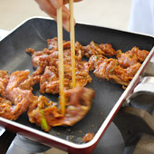
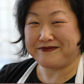
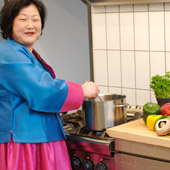
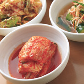
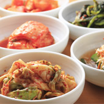
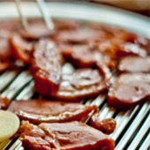

Öle, Pasten, Gewürze
„Für die Zubereitung verwende ich nur wertvolle Pflanzenöle wie Wildsesamöl, Sesamöl oder Distelöl – und natürlich original koreanische Pasten und Gewürze."
„Ma-ssit-ge D-seyo …"
… heißt auf Deutsch: guten Appetit!
„… in der ich Ihnen – gemeinsam mit meinem Team – gerne einige Köstlichkeiten aus meiner Heimat zubereite."


Myung Shin Omstammt aus Ichon, etwa 60 km südöstlich von Seoul. Seit rund 30 Jahren in Würzburg.
„Vor ca. 30 Jahren kam die koreanische Studentin Myung Shin Om nach Würzburg, um ihr Germanistikstudium hier fortzuführen. Während sie ihre Dissertation schrieb, kam es, wie es so oft kommt: Sie verliebte sich und brachte ihren Sohn zur Welt. Als alleinerziehende Mutter musste sie schließlich ihr Studium abbrechen …"
„So entstand die Idee des ‚kulinarischen Kollektivs'. 15 Freunde und Partner schlossen sich zusammen, um Myung Shin mit einer Anschubfinanzierung zu helfen und mit dem kollektiven Wissen zu unterstützen."
Freunde und Partner haben das Restaurant gemeinsam möglich gemacht – als Anschubfinanzierung und mit ihrem Wissen.
„Ziel ist dabei nicht, eine maximale Rendite und möglichst schnelle Rückzahlung des eingesetzten Kapitals zu erlangen, sondern der Jungunternehmerin Hilfe zur Selbsthilfe zu leisten und ihr eine langfristige Perspektive am Markt zu geben."
„Mein Name ist Myung Shin Om. Ich stamme aus Ichon, das etwa 60 km südöstlich von Seoul gelegen ist. Meine Urgroßmutter hat bereits für das Königshaus gekocht. Die Koch-Kunst hat in unserer Familie also bereits seit über einem Jahrhundert Tradition."
„Unser koreanisches Essen bietet eine ganze Vielfalt von Geschmacksrichtungen: scharf, süß-sauer, mild und salzig."

„Für die Zubereitung verwende ich nur wertvolle Pflanzenöle wie Wildsesamöl, Sesamöl oder Distelöl – und natürlich original koreanische Pasten und Gewürze."

„Die koreanische Küche ist sehr gesund – wertvolle Nährstoffe bleiben durch die besonders schonende Zubereitungsart erhalten. Fettarme Zubereitung macht das Essen leicht und bekömmlich."

Alle Gerichte werden mit verschiedenen Bantschan (Beilagen) und Reis serviert – dazu frische, qualitativ hochwertige Zutaten aus der Region.
Aus diesen Zutaten entsteht der Geschmack jedes Gerichts.
„Alles wird ohne Geschmacksverstärker geschmacklich fein komponiert."
„Wir bieten Ihnen als Besonderheit ein BBQ, das Sie direkt am Tisch frisch grillen."
„Sie grillen selbst direkt an Ihrem Tisch. Dazu servieren wir Reis, Salatblätter, Bantschan (Beilagen) und pikante Soße. Ab 2 Personen und mit gleicher Fleischsorte. Preis pro Person – Vorbestellung ist erwünscht."

소 불고기
Fein geschnetzelte Rinderhüfte, mariniert in Birne, Sojasoße, Frühlingszwiebeln und Knoblauch.
삼겹살
Hauchdünn geschnittenes Schweinebauchfleisch.
로스트 비프
Hauchdünn geschnitten.
Wir stellen ein koreanisches Buffet für Ihre Veranstaltung zusammen – ab 20 Personen, in drei Menü-Stufen.
Anfragen telefonisch unter 0931 27 89 65 70 oder per E-Mail an menue@frau-om-kocht.de.
In der Frankenschau aktuell des Bayerischen Fernsehens lief ein Beitrag unter dem Titel „Asiatisches Catering Würzburg".
TV-Beitrag · Bayerisches Fernsehen
Der Zeitungsartikel vom 5. Juni 2012 gehört zur Geschichte des kulinarischen Kollektivs.
Zeitungsartikel · 5. Juni 2012
Die Teigtaschen – mit Kimtschi oder mit Silberknoblauch – werden im Haus gemacht.
Sikhye, Suzong-Gwa und Kornelkirsch-Tee entstehen ebenfalls in der eigenen Küche.
„Alles wird ohne Geschmacksverstärker geschmacklich fein komponiert."
Die Weine kommen vom Weingut Geiger & Söhne, die Biere von Herbsthäuser.
Mitten im Herzen Würzburgs, in der Peterstraße 14. Hier verwöhnen wir Sie mit ausgesuchten Speisen und original koreanischen Getränken.
„Für den entspannten Aufenthalt am Abend empfehlen wir die rechtzeitige Reservierung."Telefon0931 / 27 89 65 70 Mobil0170 / 3 15 09 31 E-Mailmenue@frau-om-kocht.de